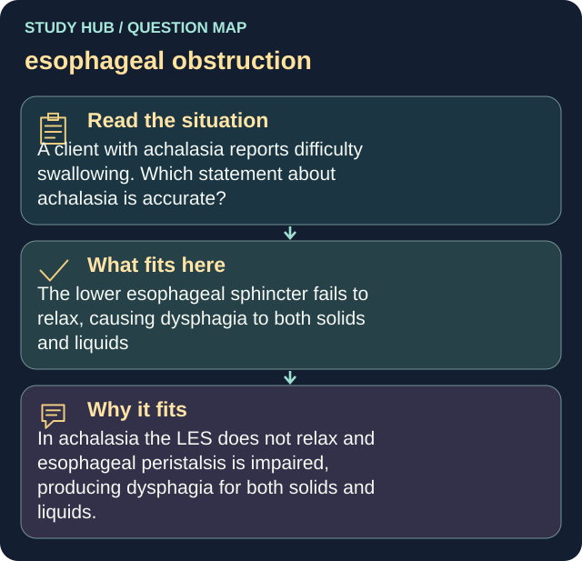

A client with achalasia reports difficulty swallowing. Which statement about achalasia is accurate?
Answer
The lower esophageal sphincter fails to relax, causing dysphagia to both solids and liquids
Reasoning
In achalasia the LES does not relax and esophageal peristalsis is impaired, producing dysphagia for both solids and liquids.
Why the other answers do not fit
- Only solid foods cause difficulty swallowing
- It results from excessive gastric acid production
- It is permanently cured with antacids
Shared reasoning for choices without a separate note: In achalasia the LES does not relax and esophageal peristalsis is impaired, producing dysphagia for both solids and liquids.
